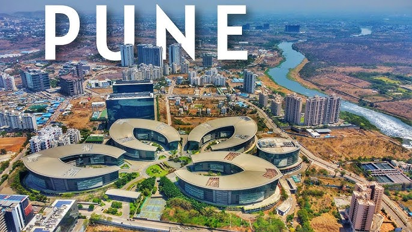
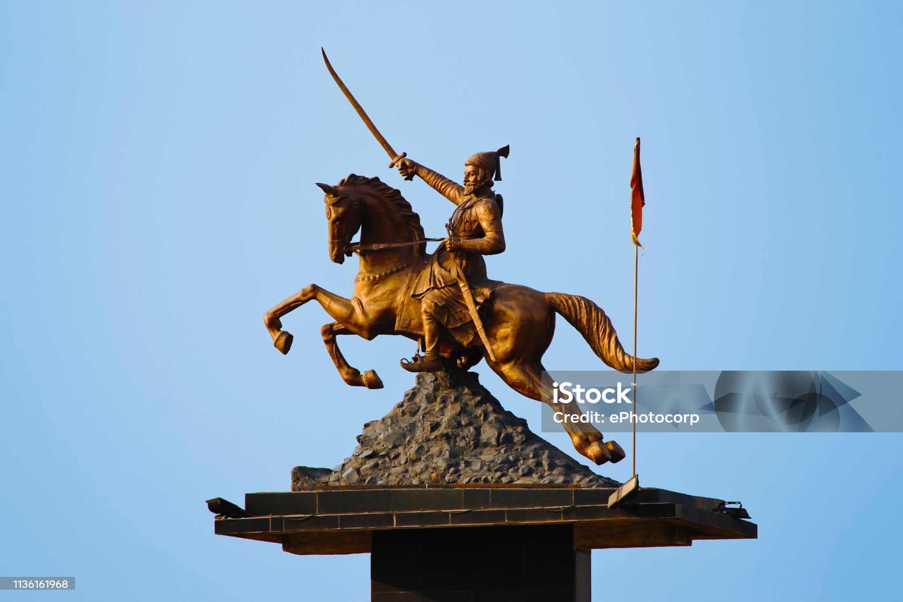
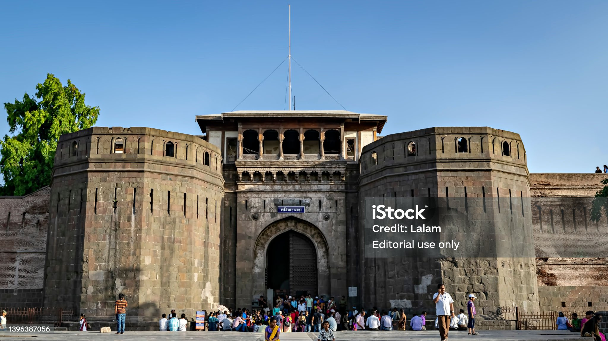

Pune, often called the "Queen of the Deccan" and the cultural capital of Maharashtra, is a vibrant metropolis blending rich Maratha history with modern IT and automotive industries. Known as the "Oxford of the East" for its prestigious educational institutions, this western Indian city offers a pleasant climate, bustling nightlife, and a unique blend of traditional culture and urban development. Historical Significance: Known as the seat of the Peshwas, the city is home to landmarks like the Shaniwarwada fort (1732) and the Aga Khan Palace, playing a major role in Indian independence. Education Hub: Pune is a major center for education, boasting institutions like Savitribai Phule Pune University and the Film and Television Institute of India (FTII). Industry and IT: It is a major economic hub, with significant automotive, engineering, and information technology sectors located in areas like Hinjewadi and Pimpri-Chinchwad. Cultural Scene: As the heartland of Maharashtrian culture, Pune is known for hosting the renowned Sawai Gandharva classical music festival and a high-spirited Ganesh Chaturthi celebration. Geography and Climate: Situated on the Deccan plateau at the confluence of the Mula and Mutha rivers, it offers a moderate, pleasant climate compared to nearby coastal regions.

The Chhatrapati Shivaji Maharaj Statue in Katraj, Pune, stands as a prominent and inspiring landmark in the southern part of the city, representing pride, valor, and the rich legacy of the Maratha Empire. Located near the bustling Katraj Chowk and a popular spot on the Katraj-Kondhwa road, this statue often acts as a welcoming symbol for commuters entering Pune from the Satara side. The area around the statue is a frequent gathering place for locals, particularly during Shiv Jayanti celebrations, which are celebrated with great zeal, traditional dhol-tasha, and floral tributes. Significance: The statue serves as a reminder of Shivaji Maharaj's vision of Hindavi Swarajya and inspires younger generations in the Katraj and surrounding areas. Locality Landmark: Being located in one of Pune's busiest, rapidly growing areas, the Katraj Shivaji Maharaj Putla is easily accessible and a well-known navigation point. Cultural Center: The statue is meticulously maintained, and its location is surrounded by residential and commercial hubs, making it a focal point for cultural and local pride in the Katraj and Kondhwa Budruk localitie

Shaniwar Wada, built in 1732 by Peshwa Baji Rao I, is a historical fortification in Pune, Maharashtra, serving as the former seat of the Maratha Empire. Despite being partially destroyed by fire in 1828 and British artillery in 1818, the fort's, strong stone foundations and grand Delhi Darwaja still stand. Today, this landmark features expansive gardens, a lotus-shaped Hazari Karanje fountain, and a popular evening light-and-sound show. Key Details About Shaniwar Wada: Significance: Symbolizes Maratha power and culture in Pune, initially designed as a seven-story complex. Gates: Features five main gates—Dilli, Mastani, Khidki, Ganesh, and Jambhul. Legend: Famously known for its association with the young Peshwa Narayanrao, whose screams for help are allegedly heard on full moon nights. Visiting Info: Open daily from roughly 8:00 AM to 6:30 PM, with a nominal entry fee.